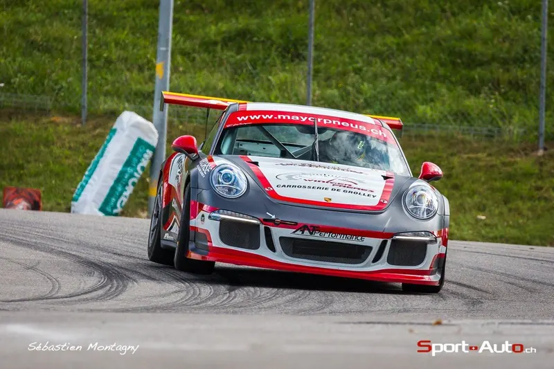

Compétition
Le n° 438 en piste.
La passion de l'atelier ne s'arrête pas à la carrosserie : une Porsche 911 aux couleurs de Winiger Frères court sous le numéro 438.

La voiture.
- Voiture
- Porsche 911
- Numéro
- 438
- Livrée
- Winiger Frères, Carrosserie de Grolley
La livrée porte le nom de l'atelier : c'est la même exigence de finition qu'en carrosserie.
Suivre les sorties sur InstagramVotre voiture mérite le même soin.
Carrosserie, peinture ou gardiennage : parlons de votre véhicule.